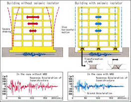
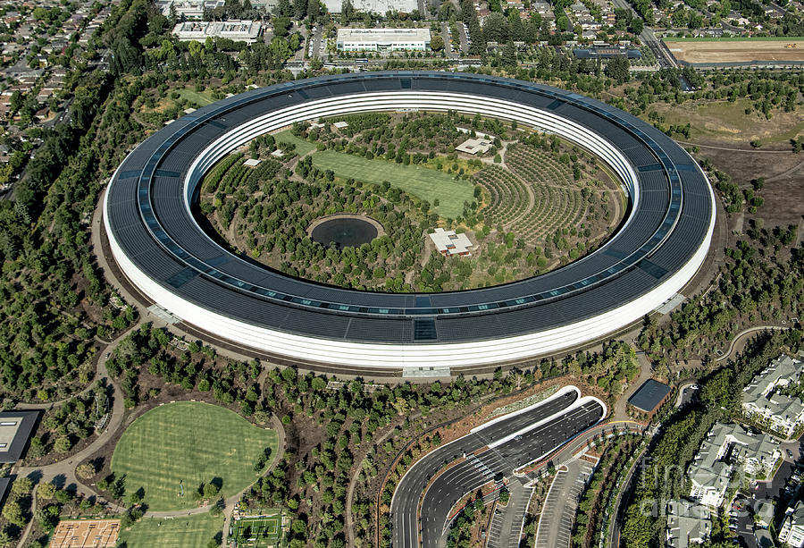
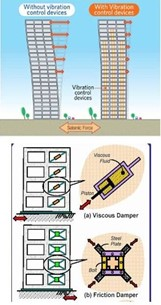
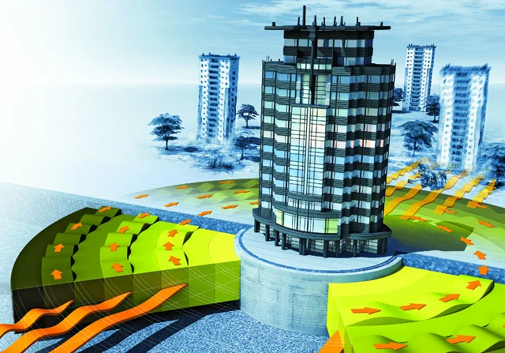

Sohrab Akhoundzadeh
Flexibele fundering
Hoewel aardbevingen onvermijdelijk zijn, zijn de oorzaken van dodelijke slachtoffers en de omvang van de schade vaak afhankelijk van ontwerpfouten, een gebrek aan technische service en materiaalkwaliteit. Om de aardbevingsschade tegen te gaan, worden
er tegenwoordig veel verschillende bouwtechnieken gebruikt.
Een belangrijke en effectieve methode, is het creëren van een flexibele fundering. Om aardbevingsschade tegen te gaan, is dit cruciaal. Tegenwoordig wordt dit gedaan door basis isolatie. Bij deze methode focussen architecten zich op het bouwen van een
gebouw op flexibel staal, rubber en loden kussens. Vervolgens wordt het gebouw via isolatoren verbonden met het materiaal. Bij het opvangen van de aardbevingen zullen de isolatoren ervoor zorgen dat het stuk aangelegde staal, rubber
of lood met de oppervlaktegolven kan resoneren. Hierdoor vindt er alleen een hevige zijwaartse beweging onder het gebouw plaats, waardoor het gebouw stil kan blijven staan en er geen golven door het gebouw heen zullen lopen. Hierbij
vangen de isolatoren de golven op.

Afbeelding 1
Gebouw zonder vs. gebouw met basis isolatie
De flexibele fundering biedt enorme voordelen voor een gebouw. Zo helpt het om de spanning op structurele materialen, zoals harde en stijve constructies, te verminderen. Daarnaast zorgt een flexibele fundering voor een verbeterde veerkracht. Dat komt
omdat flexibele gebouwen na een aardbeving vaak eenvoudiger hersteld kunnen worden. Ze kunnen beter worden aangepast om toekomstige aardbevingen te weerstaan na reparaties. Een bekend voorbeeld van een gebouw waar gebruik is gemaakt
van basis isolering, is het Apple Park in Californië. Een ringvormig gebouw met een oppervlakte van maar liefst 445.005 m2.

Afbeelding 2
Apple Park, Cupertino, Californië
Demping
Een tweede belangrijke methode om aardbevingsschade op gebouwen te kunnen minimaliseren, is de toepassing van demping. Hierbij wordt gebruik gemaakt van schokdempers, die de magnitude van de schokgolven verminderen en de stress op een gebouw helpen verminderen.
Dit wordt gedaan op twee manieren: vibratiecontrole en schommelingskracht.
Bij vibratiecontrole berust de aanpak op het installeren van dempers op verschillende niveaus binnen een gebouw. Dit wordt gedaan tussen kolommen en balken. De dempers hebben zuigerknoppen die zijn omsloten door een cilinder, die siliconenolie bevat.
Wanneer er een aardbeving plaatsvindt, kan het gebouw nu de energie door de oppervlaktegolven vervoeren naar de zuigers, waardoor ze druk kunnen uitoefenen op de zuigers. De energie wordt daarna omgezet in warmte, waardoor de kracht
van de trillingen verspreid kan worden. Vibratiecontrole levert enorm veel voordelen voor de structurele integriteit van gebouwen op. Zo vergroten dempers de stabiliteit van een gebouw en hebben gebouwen met dempers een langere levensduur.

Afbeelding 3
Vibratiecontrole
Het gebruik van schommelingskracht is vooral van toepassing bij wolkenkrabbers. Bij deze methode wordt er een massieve bol via stalen kabels aan een ingebouwd hydraulisch systeem op de top van een gebouw geplaatst. Wanneer er een aardbeving plaatsvindt,
zal de wolkenkrabber heen en weer bewegen. De massieve bol zal zich dan gedragen als een schommel, die in tegengestelde richting van de wolkenkrabber beweegt. Hierdoor wordt dit gebouw gestabiliseerd, waardoor schade geminimaliseerd
tot zelfs voorkomen kan worden. Een voorbeeld van een wolkenkrabber waarbij gebruik gemaakt wordt van schommelingskracht, is Taipei 101, een wolkenkrabber met een hoogte van 509 meter.
Radiaal schild
Een relatief nieuwe methode die tegenwoordig al wordt toegepast op verschillende gebouwen, is de installatie van een ondergronds radiaal schild. Deze methode berust op het bouwen van een groot aantal ringen gemaakt van een combinatie van plastic en beton
of rubber en staal, die tenminste een meter onder de fundering komen te liggen. Wanneer seismische golven zich richting het gebouw voortplanten, dwingt het schild om de golven door de uiterste ringen te bewegen. Hierbij speelt de elasticiteit
van de ringen een grote rol. De ringen absorberen een groot deel van de energie, waardoor de amplitude van de trillingen afneemt.
Bovendien kunnen de ringen dankzij de elasticiteit van het materiaal onder spanning licht vervormen. Hierdoor wordt de trillingsenergie geabsorbeerd en omgezet in een andere vorm, zoals warmte. Hierdoor kan een gebouw met deze installatie worden gestabiliseerd
en wordt de impact van de trillingen geminimaliseerd. Veelvoorkomende gebouwen waar deze methode hedendaags wordt toegepast, zijn onder andere ziekenhuizen en residentiële1 gebouwen.

Afbeelding 5
Concept van radiaal schild bij een wolkenkrabber
1 : Gebouw of gebouwdeel bestemd voor huisvesting